Computer vision#
Image formation, filtering and features, stereo and optical flow, structure from motion, human vision, and deep networks for vision.
About this chapter
The chapter follows a classical course. It starts with how a 3D scene becomes an image: perspective projection, light and reflectance, color. Image processing comes next: the geometric transformations, sampling and filtering, edges, texture, and optical flow. A short part on human vision (psychophysics, the cell types in V1, Gestalt grouping) explains where many of these filters come from.
The longest part is correspondence: finding the same point in two images. It underlies stereo depth, optical flow and structure from motion, and is built from keypoint detection, description and matching with RANSAC. The last part covers deep networks for vision: CNNs, segmentation, detection with the R-CNN family, and single-view 3D. The note opens with two older model-based methods, active shape models and snakes.
Chapter outline: 6 sections
- Useful packagesTwo model-based methods for finding shapes in an image.
- What's in an image?3 figures
- Image processing2 interactive3 figures
- Cogsci / neuro
- Correspondence + applications (steropsis, optical flow, sfm)5 figures
- Deep learning1 figure
Useful packages#
Two model-based methods for finding shapes in an image. Both fit a prior model of the expected shape to the image instead of learning from labels.
https://www.cellpose.org/ - cell segmentation
-
intro (cootes 2000)
Model-based methods make use of a prior model of what is expected in the image, and typically attempt to find the best match of the model to the data in a new image
model
requires user-specified landmarks \(x\) (e.g. points for eyes/nose on a face)
simplest model - use a typical example as a prototype + compare others using correlation
invariances: given a set of image coordinates, for all rotations / scales / translations - try them all so that the sum of distances of each shape to the mean is minimized (called Procrustes analysis)
shape model learns low-dim model of \(x\), maybe using \(k\) top bases of PCA
inference
nearest neighbor: iteratively find transformation + shape model parameters to represent landmarks
classification: non-trivial to define a goodness of fit measure for the landmarks - something like distance between points and strongest nearby edges
active shape model - for each landmark, look for nearby groundtruth, adapt PCA values, apply reasonable constraints, then iterate
improve speed by doing this at large scales before going to more detailed scales
snakes - active contour models (kass et al. 1988)
deformable spline - pulled towards object contours while internal forces resist deformation
What’s in an image?#
vision doesn’t exist in isolation - movement
three R’s: recognition, reconstruction, reorganization
Fundamentals of image formation#
Projections#
Lowercase \((x, y)\) is a point in the image and uppercase \((X, Y, Z)\) a point in the scene. Perspective projection divides by depth: \(x = fX/Z\). That one division explains vanishing points, why near objects look bigger, and why they sit lower in the image.
image I(x,y) projects scene(X, Y, Z)
lower case for image, upper case for scene
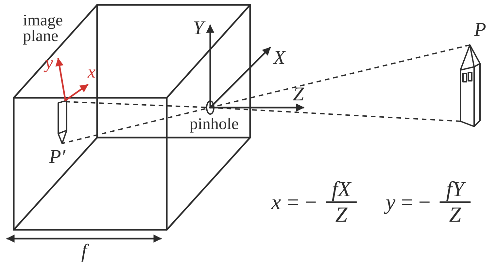
Fig. 65 Figure 1. A pinhole camera. Rays from the scene pass through the pinhole and form an upside-down image on the back wall, a distance f behind it: x = −fX/Z, y = −fY/Z.#
f is a fixed dist. not a function
box with pinhole=center of projection, which lets light go through
Z axis points out of box, X and Y aligned w/ image plane (x, y)
perspective projection - maps 3d points to 2d points through holes
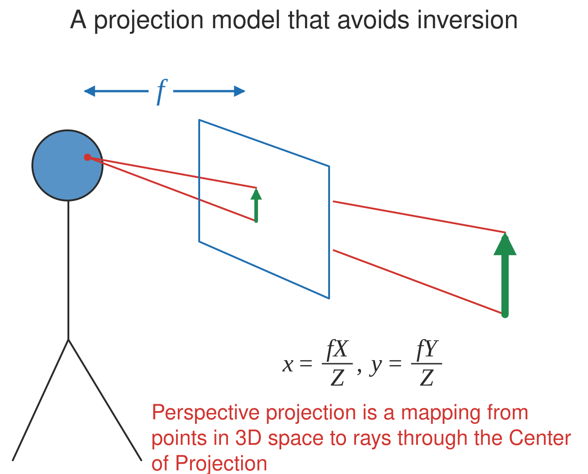
Fig. 66 Figure 2. The same projection with the image plane placed in front of the eye, so the image is upright: x = fX/Z, y = fY/Z. Every point on a ray through the center of projection lands on the same pixel.#
perspective projection works for spherical imaging surface - what’s important is 1-1 mapping between rays and pixels
natural measure of image size is visual angle
orthographic projection - appproximation to perspective when object is relatively far
define constant \(s = f/Z_0\)
transform \(x = sX, y = sY\)


Phenomena from perspective projection#
Each effect follows from \(x = fX/Z\). Along a line, \(x\) tends to \(fD_x/D_z\) as the point goes to infinity, so parallel lines meet at a vanishing point. Points on the ground plane \(Y = -h\) land at \(y = -fh/Z\), so nearer points sit lower in the image.
parallel lines converge to vanishing point (each family has its own vanishing point)
pf: point on a ray \([x, y, z] = [A_x, A_y, A_z] + \lambda [D_x, D_y, D_z]\)
\(x = \frac{fX}{Z} = \frac{f \cdot (A_x+\lambda D_X)}{A_z + \lambda D_z}\)
\(\lambda \to \infty \implies \frac{f \cdot \lambda D_x}{\lambda D_z} = \frac{f \cdot D_x}{D_z}\)
\(\implies\) vanishing point coordinates are \(fD_x / D_z , f D_y / D_z\)
not true when \(D_z = 0\)
all vanishing points lie on horizon
nearer objects are lower in the image
let ground plane be \(Y = -h\) (where h is your height)
point on ground plane \(y = -fh / Z\)
nearer objects look bigger
foreshortening - objects slanted w.r.t line of sight become smaller w/ scaling factor cos \(\sigma\) ~ \(\sigma\) is angle between line of sight and the surface normal
Radiometry#
How bright a pixel is depends on the light, the angle between light and camera, and the surface. Lambertian surfaces look equally bright from every direction; specular ones reflect like a mirror.
irradiance - how much light (photons) is captured in some time interval
radiant power / unit area (\(W/m^2\))
radiance - power in given direction / unit area / unit solid angle
L = directional quantity (measured perpendicular to direction of travel)
\(L = Power / (dA \cos \theta \cdot d\Omega)\) where \(d\Omega\) is a solid angle (in steradians)
irradiance \(\propto\) radiance in direction of the camera
outgoing radiance of a patch has 3 factors
incoming radiance from light source
angle between light / camera
reflectance properties of patch
2 special cases
specular surfaces - outgoing radiance direction obeys angle of incidence
lambertian surfaces - outgoing radiance same in all directions
albedo * radiance of light * cos(angle)
model reflectance as a combination of Lambertian term and specular term
also illuminated by reflections of other objects (ray tracing / radiosity)
shape-from-shading (SFS) goes from irradiance \(\to\) geometry, reflectances, illumination
Frequencies and colors#
Vision is more sensitive to some spatial frequencies and colors than others. Color comes from three cone types, so different spectra can look the same (metamers), and color constancy and white balancing correct for the color of the light.
contrast sensitivity depends on frequency + color
band-pass filtering - use gaussian pyramid
pyramid blending
eye
iris - colored annulus w/ radial muscles
pupil - hole (aperture) whose size controlled by iris
retina
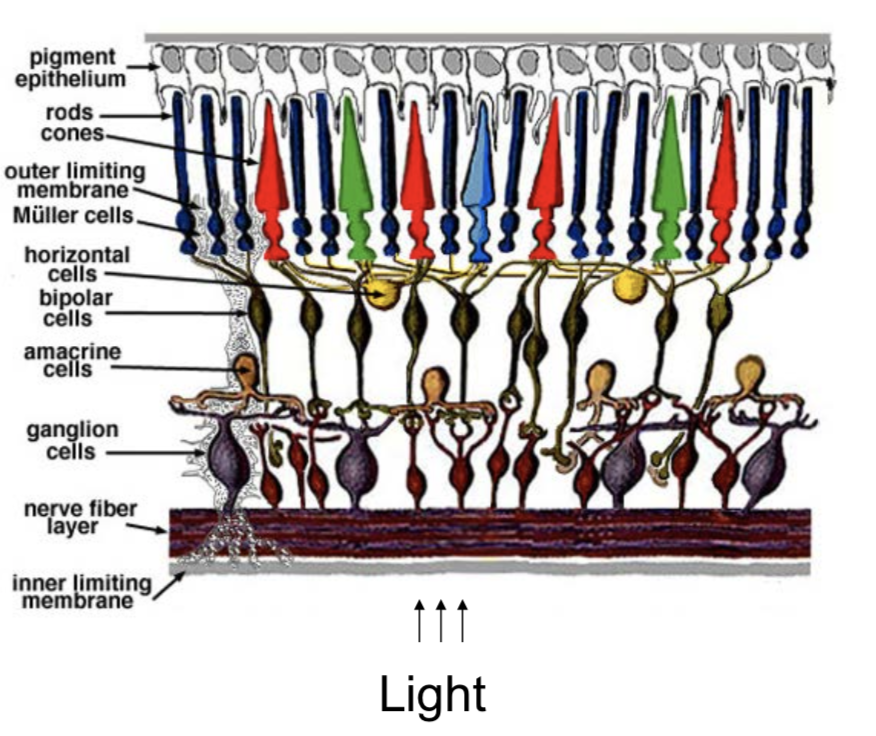
Fig. 67 Figure 3. Layers of the retina. Light enters from the bottom and passes through the ganglion, amacrine, bipolar and horizontal cells before reaching the rods and cones at the top.#
colors are what is reflected
cones (short = blue, medium = green, long = red)
metamer - 2 different but indistinguishable spectra
color spaces
rgb - easy for devices
chips tend to be more green
hsv (hue, saturation, value)
lab (perceptually uniform color space)
color constancy - ability to perceive invariant color despite ecological variations
camera white balancing (when entire photo is too yellow or something)
manual - choose color-neutral object and normalize
automatic (AWB)
grey world - force average color to grey
white world - force brightest object to white
Image processing#
Transformations#
The table runs from the most general transformation (projective) to the most rigid (rotation). Each step down adds a constraint, removes parameters and preserves more: projective maps parallel lines to intersecting ones, affine keeps them parallel, Euclidean also keeps lengths, angles and area.
2 object properties
pose - position and orientation of object w.r.t. the camera (6 numbers - 3 translation, 3 rotation)
shape - relative distances of points on the object
nonrigid objects can change shape
Transform (most general on top) |
Constraints |
Invariants |
2d params |
3d params |
|---|---|---|---|---|
Projective = homography (contains perspective proj.) |
Ax + t, A nonsingular, homogenous coords |
parallel -> intersecting |
8 (-1 for scale) |
15 (-1 for scale) |
Affine |
Ax + t, A nonsingular |
parallelism, midpoints, intersection |
6=4+2 |
12=9+3 |
Euclidean = Isometry |
Ax + t, A orthogonal |
length, angles, area |
3=1+2 |
6=3+3 |
Orthogonal (rotation when det = 1 / reflection when det = -1) |
Ax, A orthogonal |
1 |
3 |
projective transformation = homography
homogenous coordinates - use n + 1 coordinates for n-dim space to help us represent points at \(\infty\)
\([x, y] \to [x_1, x_2, x_3]\) with \(x = x_1/x_3, y=x_2/x_3\)
\([x_1, x_2] = \lambda [x_1, x_2] \quad \forall \lambda \neq 0\) - each points is like a line through origin in n + 1 dimensional space
even though we added a coordinate, didn’t add a dimension
standardize - make third coordinate 1 (then top 2 coordinates are euclidean coordinates)
when third coordinate is 0, other points are infinity
all 0 disallowed
Euclidean line \(a_1x + a_2y + a_3=0\) \(\iff\) homogenous line \(a_1 x_1 + a_2x_2 + a_3 x_3 = 0\)
perspective maps parallel lines to lines that intersect
incidence of points on lines
when does a point \([x_1, x_2, x_3]\) lie on a line \([a_1, a_2, a_3]\) (homogenous coordinates)
when \(\mathbf{x} \cdot \mathbf{a} = 0\)
cross product gives intersection of any 2 lines
representing affine transformations: \(\begin{bmatrix}X'\\Y'\\W'\end{bmatrix} = \begin{bmatrix}a_{11} & a_{12} & t_x\\ a_{21} & a_{22} & t_y \\ 0 & 0 & 1\end{bmatrix}\begin{bmatrix}X\\Y\\1\end{bmatrix}\)
representing perspective projection: \(\begin{bmatrix}1 & 0& 0 & 0\\ 0 & 1 & 0 & 0 \\ 0 & 0 & 1/f & 0 \end{bmatrix} \begin{bmatrix}X\\Y\\Z \\ 1\end{bmatrix} = \begin{bmatrix}X\\Y\\Z/f\end{bmatrix} = \begin{bmatrix}fX/Z\\fY/Z\\1\end{bmatrix}\)
affine transformations
affine transformations are a a group
examples
anisotropic scaling - ex. \(\begin{bmatrix}2 & 0 \\ 0 & 1 \end{bmatrix}\)
shear
euclidean transformations = isometries = rigid body transform
preserves distances between pairs of points: \(\vert \vert \psi(a) - \psi(b)\vert \vert = \vert \vert a-b\vert \vert\)
ex. translation \(\psi(a) = a+t\)
composition of 2 isometries is an isometry - they are a group
orthogonal transformations - preserves inner products \(\forall a,b \: a \cdot b =a^T A^TA b\)
\(\implies A^TA = I \implies A^T = A^{-1}\)
\(\implies \det(A) = \pm 1\)
2D
really only 1 parameter \( \theta\) (also for the +t)
\(A = \begin{bmatrix}\cos \theta & - \sin \theta \\ \sin \theta & \cos \theta \end{bmatrix}\) - rotation, det = +1
\(A = \begin{bmatrix}\cos \theta & \sin \theta \\ \sin \theta & - \cos \theta \end{bmatrix}\) - reflection, det = -1
3D
really only 3 parameters
ex. \(A = \begin{bmatrix}\cos \theta & - \sin \theta & 0 \\ \sin \theta & \cos \theta & 0 \\ 0 & 0 & 1\end{bmatrix}\) - rotation, det rotate about z-axis (like before)
rotation - orthogonal transformations with det = +1
2D: \(\begin{bmatrix}\cos \theta & - \sin \theta \\ \sin \theta & \cos \theta \end{bmatrix}\)
3D: \(\begin{bmatrix}\cos \theta & - \sin \theta & 0 \\ \sin \theta & \cos \theta & 0 \\ 0 & 0 & 1\end{bmatrix}\) (rotate around z-axis)
lots of ways to specify angles
axis plus amount of rotation - we will use this
euler angles
quaternions (generalize complex numbers)
Roderigues formula - converts: \(R = e^{\phi \hat{s}} = I + \sin [\phi] \: \hat{s} + (1 - \cos \phi) \hat{s}^2\)
\(s\) is a unit vector along \(w\) and \(\phi=\vert \vert w\vert \vert t\) is total amount of rotation
rotation matrix
can replace cross product with matrix multiplication with a skew symmetric \((B^T = -B)\) matrix:
\(\begin{bmatrix} t_1 \\ t_2 \\ t_3\end{bmatrix}\)\( ^ \)\(\begin{bmatrix} x_1 \\ x_2 \\ x_3 \end{bmatrix} = \begin{bmatrix} t_2 x_3 - t_3 x_2 \\ t_3 x_1 - t_1 x_3 \\ t_1 x_2 - t_2 x_1\end{bmatrix}\)
\(\hat{t} = [t_\times] = \begin{bmatrix} 0 & -t_3 & t_2 \\ t_3 & 0 & -t_1 \\ -t_2 & t_1 & 0\end{bmatrix}\)
proof
\(\dot{q(t)} = \hat{w} q(t)\)
\(\implies q(t) = e^{\hat{w}t}q(0)\)
where \(e^{\hat{w}t} = I + \hat{w} t + (\hat{w}t)^2 / w! + ...\)
can rewrite in terms above
Image preprocessing#
An image is a sampled function, so signal processing applies. Undersampling makes high frequencies masquerade as low ones (aliasing), so images are blurred with a Gaussian before they are shrunk. By the convolution theorem, convolving in space is multiplying in frequency.
image is a function from \(R^2 \to R\)
f(x,y) = reflectance(x,y) * illumination(x,y)
image histograms - treat each pixel independently
better to look at CDF
use CDF as mapping to normalize a histogram
histogram matching - try to get histograms of all pixels to be same
need to map high dynamic range (HDR) to 0-255 by ignoring lots of values
do this with long exposure
point processing does this transformation independent of position x, y
can enhance photos with different functions
negative - inverts
log - can bring out details if range was too large
contrast stretching - stretch the value within a certain range (high contrast has wide histogram of values)
sampling
sample and write function’s value at many points
reconstruction - make samples back into continuous function
ex. audio -> digital -> audio
undersampling loses information
aliasing - signals traveling in disguise as other frequencies
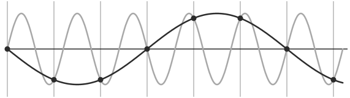
Fig. 68 Figure 4. A sinusoid at 5/6 cycle per sample (grey) sampled at the vertical lines. The samples fit a much slower sinusoid (black) just as well: an alias.#
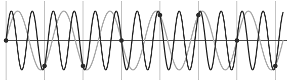
Fig. 69 Figure 5. Two different sinusoids, at 5/6 and 11/6 cycle per sample, pass through exactly the same samples.#
antialiasing
can sample more often
make signal less wiggly by removing high frequencies first
filtering
lowpass filter - removes high frequencies
linear filtering - can be modeled by convolution
cross correlation - what cnns do, dot product between kernel and neighborhood
sobel filter is edge detector
gaussian filter - blur, better than just box blur
rule of thumb - set filter width to about 6 \(\sigma\)
removes high-frequency components
convolution - cross-correlation where filter is flipped horizontally and vertically
commutative and associative
convolution theorem: \(F[g*h] = F[g]F[h]\) where F is Fourier, * is convolution
convolution in spatial domain = multiplication in frequency domain
resizing
Gaussian (lowpass) then subsample to avoid aliasing
image pyramid - called pyramid because you can subsample after you blur each time
whole pyramid isn’t much bigger than original image
collapse pyramid - keep upsampling and adding
good for template matching, search over translations
sharpening - add back the high frequencies you remove by blurring (laplacian pyramid)
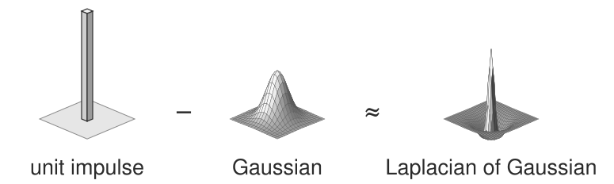
Fig. 70 Figure 6. A unit impulse minus a Gaussian is roughly a Laplacian of Gaussian. Convolving with it subtracts the blurred image from the image, which leaves the high frequencies (edges and detail).#


Edges + templates#
An edge is where intensity changes fast, so edge detectors take a derivative. Derivatives amplify noise, so they smooth first. Smoothing and differentiating are both convolutions, so they combine into one filter, the derivative of a Gaussian.
edge - place of rapid change in the image intensity function
solns
smooth first, then take gradient
gradient first then smooth gives same results (linear operations are interchangeable)
derivative theorem of convolution - differentiation can also be though of as convolution
can convolve with deriv of gaussian
can give orientation of edges
tradeoff between smoothing (denoising) and good edge localization (not getting blurry edges)
image gradient looks like edges
canny edge detector
filter image w/ deriv of Gaussian
find magnitude + orientation of gradient
non-maximum suppression - does thinning, check if pixel is local maxima
anything that’s not a local maximum is set to 0
on line direction, require a weighted average to interpolate between points (bilinear interpolation = average on edges, then average those points)
hysteresis thresholding - high threshold to start edge curves then low threshold to continue them
Scale-space and edge detection using anisotropic diffusion (perona & malik 1990)
introduces anisotropic diffusion (see wiki page) - removes image noise without removing content
produces series of images, similar to repeatedly convolving with Gaussian
filter review
smoothing
no negative values
should sum to 1 (constant response on constant)
derivative
must have negative values
should sum to 0 (0 response on constant)
intuitive to have positive sum to +1, negative sum to -1
matching with filters (increasing accuracy, but slower)
ex. zero-mean filter subtract mean of patch from patch (otherwise might just match brightest regions)
ex. SSD - L2 norm with filter
doesn’t deal well with intensities
ex. normalized cross-correlation
recognition
instance - “find me this particular chair”
simple template matching can work
category - “find me all chairs”
Texture#
Texture is described by statistics of filter responses rather than exact pixels. Textures are compared through histograms of these responses, and new texture is synthesized by matching them.
texture - non-countable stuff
related to material, but different
texture analysis - compare 2 things, see if they’re made of same stuff
pioneered by bela julesz
random dot stereograms - eyes can find subtle differences in randomness if fed to different eyes
human vision sensitive to some difference types, but not others
easy to classify textures based on v1 gabor-like features
can make histogram of filter response histograms - convolve filter with image and then treat each pixel independently
heeger & bergen siggraph 95 - given texture, want to make more of that texture
start with noise
match histograms of noise with each of your filter responses
combine them back together to make an image
repeat this iteratively
simoncelli + portilla 98 - also match 2nd order statistics (match filters pairwise)
much harder, but works better
texton histogram matching - classify images
use “computational version of textons” - histograms of joint responses
like bag of words but with “visual words”
won’t get patches with exact same distribution, so need to extract good “words”
define words as k-means of features from 10x10 patches
features could be raw pixels
gabor representation ~10 dimensional vector
SIFT features: histogram set of oriented filters within each box of grid
HOG features
usually cluster over a bunch of images
invariance - ex. blur signal
each image patch -> a k-means cluster so image -> histogram
then just do nearest neighbor on this histogram (chi-squared test is good metric)
object recognition is really texture recognition
all methods follow these steps
compute low-level features
aggregate features - k-means, pool histogram
use as visual representation
why these filters - sparse coding (data driven find filters)
Optical flow#
Optical flow is how points move in the image as the camera moves. It splits into a translation component, which depends on depth \(Z\), and a rotation component, which does not.
simplifying assumption - world doesn’t move, camera moves
lets us always use projection relationship \(x, y = -Xf/Z, -Yf/Z\)
optical flow - movement in the image plane
square of points moves out as you get closer
as you move towards something, the center doesn’t change
things closer to you change faster
if you move left / right points move in opposite direction
rotations also appear to move opposite to way you turn your head
equations: relate optical flow in image to world coords
optical flow at \((u, v) = (\Delta x / \Delta t, \Delta y/ \Delta t)\) in time \(\Delta t\)
function in image space (produces vector field)
\(\begin{bmatrix} \dot{X}\\ \dot{Y} \\ \dot{Z} \end{bmatrix} = \cblue{-t} \corange{-\omega \times \begin{bmatrix} X \\ Y \\ Z\end{bmatrix}} \implies \begin{bmatrix} \dot{x}\\ \dot{y}\end{bmatrix}= \cblue{\frac{1}{Z} \begin{bmatrix} -1 & 0 & x\\ 0 & 1 & y\end{bmatrix} \begin{bmatrix} t_x \\ t_y \\ t_z \end{bmatrix}}+ \corange{\begin{bmatrix} xy & -(1+x^2) & y \\ 1+y^2 & -xy & -x\end{bmatrix}\begin{bmatrix} \omega_x \\ \omega_y \\ \omega_z\end{bmatrix}}\)
decomposed into translation component + rotation component
\(t_z / Z\) is time to impact for a point
translational component of flow fields is more important - tells us \(Z(x, y)\) and translation \(t\)
we can compute the time to contact
this is a key to what is used in video compression
Cogsci / neuro#
Psychophysics#
Julesz’s experiments split human vision into a fast, parallel preattentive mode and a slow, serial attentive one. Textons are what the fast mode notices.
julesz search experiment
“pop-out” effect of certain shapes (e.g. triangles but not others)
axiom 1: human vision has 2 modes
preattentive vision - parallel, instantaneous (~100-200 ms)
large visual field, no scrutiny
surprisingly large amount of what we do
ex. sensitive to size/width, orientation changes
attentive vision - serial search with small focal attention in 50 ms steps
axiom 2: textons are the fundamental elements in preattentive vision
texton is invariant in preattentive vision
ex. elongated blobs (rectangles, ellipses, line segments w/ orientation/width/length)
ex. terminators - ends of line segments
crossing of line segments
julesz conjecture (not quite true) - textures can’t be spontaneously discriminated if they have same first-order + second-order statistics (ex. density)
humans can saccade to correct place in object detection really fast (150 ms - Kirchner & Thorpe, 2006)
still in preattentive regime
can also do object detection after seeing image for only 40 ms
Neurophysiology#
Several image-processing filters have counterparts in the visual system: center-surround cells look like a Laplacian of Gaussian, simple cells like oriented Gaussian derivatives, and complex cells like max pooling over simple cells.
on-center off-surround - looks like Laplacian of a Gaussian
horizontal cell “like convolution”
LGN does quick processing
hubel & wiesel - single-cell recording from visual cortex in v1
3 v1 cell classes
simple cells - sensitive to oriented lines
oriented Gaussian derivatives
some were end-stopped
complex cells - simple cells with some shift invariance (oriented lines but with shifts)
could do this with maxpool on simple cells
hypercomplex cells (less common) - complex cell, but only lines of certain length
retinotopy - radiation stain on retina maintained radiation image
hypercolumn - cells of different orientations, scales grouped close together for a location
Perceptual organization#
The Gestalt view: we perceive grouped wholes, not individual pixels. Cues such as surroundedness, size, symmetry and convexity decide what is figure and what is ground.
max werthermian - we perceive things not numbers
principles: grouping, element connectedness
figure-ground organization: surroundedness, size, orientation, contrast, symmetry, convexity
gestalt - we see based on context
Correspondence + applications (steropsis, optical flow, sfm)#
Binocular steropsis#
Depth from two eyes or cameras. A point’s disparity, the difference between its positions in the two images, shrinks with depth. The three camera setups below differ in where the cameras point.
stereopsis - perception of depth
disparity - difference in image between eyes
this signals depth (0 disparity at infinity)
measured in pixels (in retina plane) or angle in degrees
sign doesn’t really matter
active stereopsis - one projector and one camera vs passive (ex. eyes)
active uses more energy
ex. kinect - measure / triangulate
worse outside
ex. lidar - time of light - see how long it takes for light to bounce back
3 types of 2-camera configurations: single point, parallel axes, general case
Single point of fixation (common in eyes)#
Eyes rotate so that both fixate the same point, which then has zero disparity. Disparity of nearby points is measured relative to it and grows with their change in depth, \(b \cdot \delta Z / Z^2\).
fixation point has 0 disparity
humans do this to put things in the fovea
use coordinates of cyclopean eye
vergence movement - look at close / far point on same line
change angle of convergence (goes to 0 at \(\infty\))
disparity = \( 2 \delta \theta = b \cdot \delta Z / Z^2\) where b - distance between eyes, \(\delta Z\) - change in depth, Z - depth
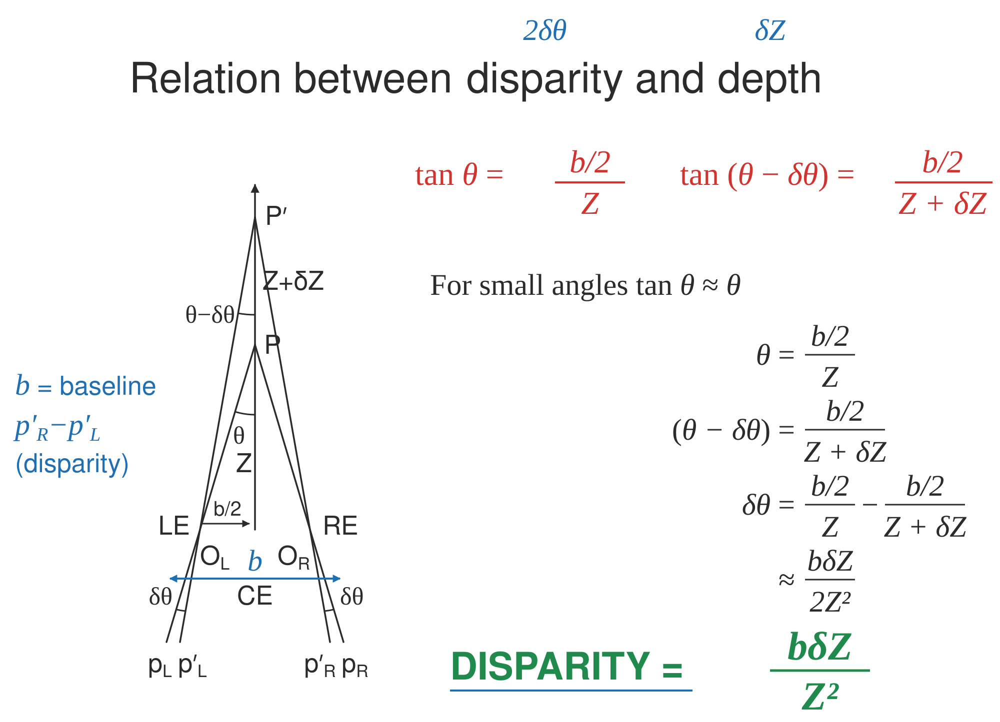
Fig. 71 Figure 7. Disparity when both eyes fixate a point P at depth Z. A point δZ farther away changes each eye’s angle by δθ, so for small angles the disparity is 2δθ = b·δZ/Z².#
b - distance between eyes, \(\delta\) - change in depth, Z - depth
version movement - change direction of gaze
forms Vieth-Muller circle - points lie on same circle with eyes
cyclopean eye isn’t on circle, but close enough
disparity of P’ = \(\alpha - \beta = 0\) on Vieth-Muller circle
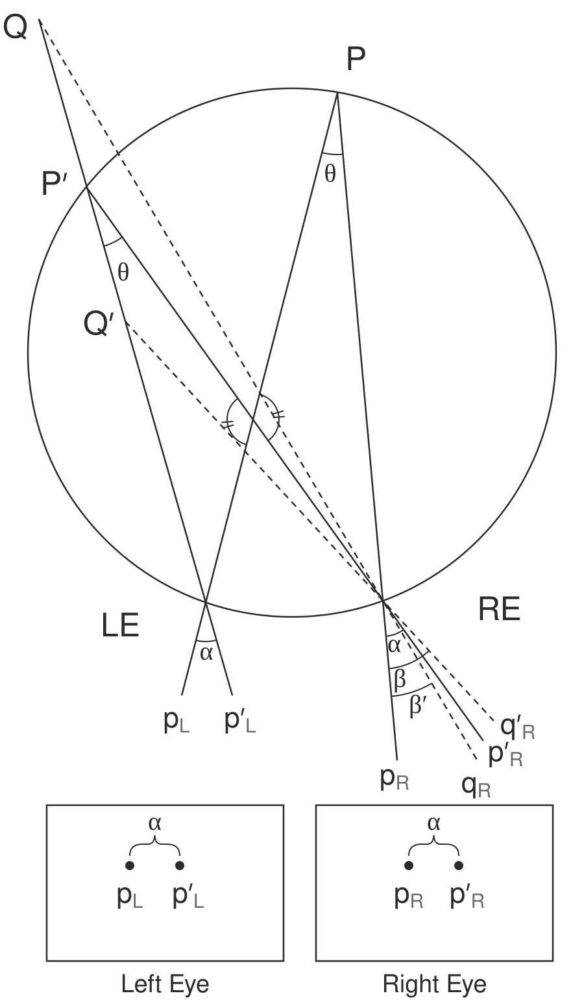
Fig. 72 Figure 8. The Vieth–Müller circle through both eyes and the fixation point P. Any point P′ on the circle makes the same angle in both eyes, so it has zero disparity. Points off the circle, like Q, do not.#


Optical axes parallel (common in robots)#
With parallel cameras, disparity is \(d = bf/Z\). Depth error grows like \(Z^2\), so stereo is precise up close and poor far away.
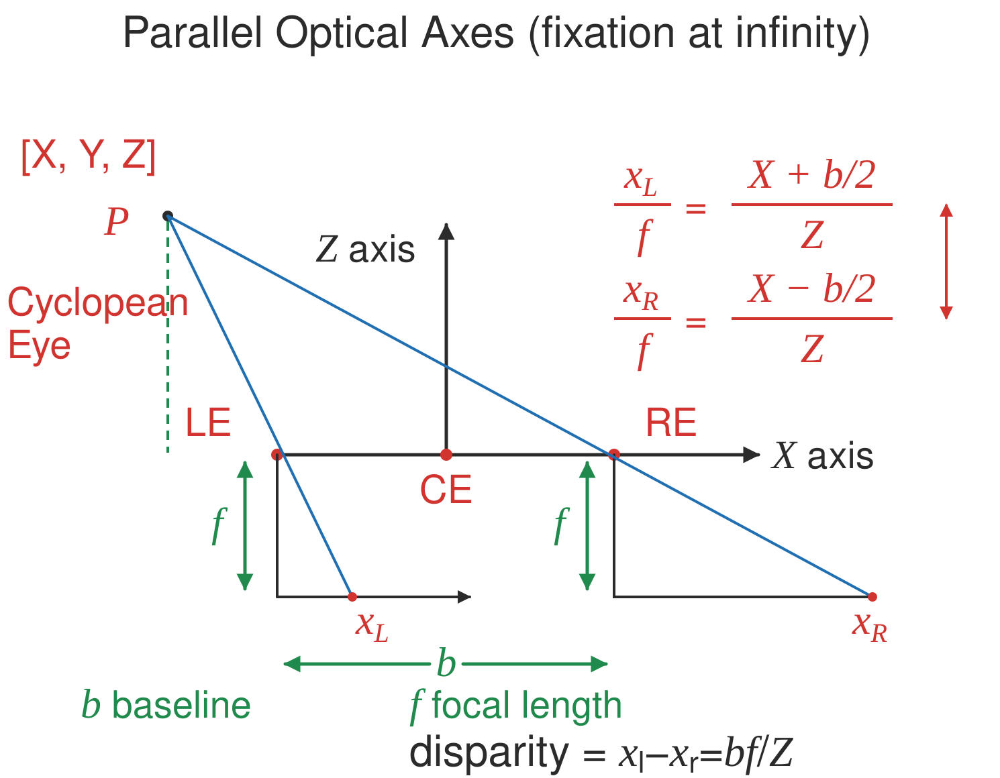
Fig. 73 Figure 9. Stereo with parallel optical axes. Similar triangles give x_L/f = (X + b/2)/Z and x_R/f = (X − b/2)/Z, so the disparity is x_L − x_R = bf/Z.#
disparity \(d = x_l - x_r = bf/Z\)
error \(\vert \delta Z\vert = \frac{Z^2 \vert \delta d\vert }{bf}\)
parallax - effect where near objects move when you move but far don’t

General case (ex. reconstruct from lots of photos)#
When the cameras’ relative rotation \(R\) and translation \(t\) are unknown, they are estimated from point matches. The essential matrix \(E\) encodes them, and each pair of matching points gives one linear constraint on \(E\).
given n point correspondences, estimate rotation matrix R, translation t, and depths at the n points
more difficult - don’t know coordinates / rotations of different cameras
epipolar plane - contains cameras, point of fixation
different epipolar planes, but all contain line between cameras
\(\vec{c_1 c_2}\) is on all epipolar planes
each image plane has corresponding epipolar line - intersection of epipolar plane with image plane
epipole - intersection of \(\vec{c_1 c_2}\) and image plane
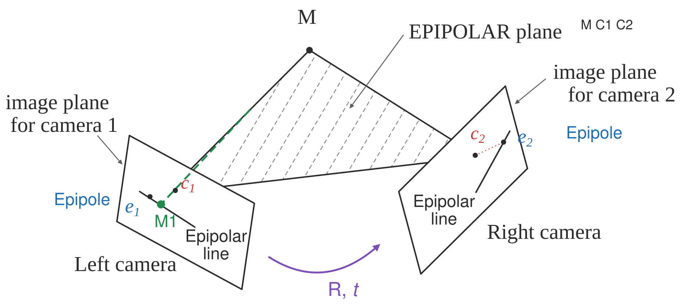
Fig. 74 Figure 10. Epipolar geometry. The scene point M and the two camera centers define a plane, which cuts each image along an epipolar line. The match for M’s image in one camera must lie on the epipolar line in the other.#
structure from motion problem: given n corresponding projections \((x_i, y_i)\) in both cameras, find \((X_i, Y_i, Z_i)\) by estimating R, t: Longuet-Higgins 8-point algorithm - overall minimizing re-projection error (basically minimizes least squares = bundle adjustment)
find \(n (\geq 8)\) corresponding points
estimate essential matrix \(E = \hat{T} R\) (converts between points in normalized image coords - origin at optical center)
fundamental matrix F corresponds between points in pixel coordinates (more degrees of freedom, coordinates not calibrated )
essential matrix constraint: \(x_1, x_2\) homogoneous coordinates of \(M_1, M_2 \implies x_2^T \hat{T} R x_1 = 0\)
6 or 5 dof; 3 dof for rotation, 3 dof for translation. up to a scale, so 1 dof is removed
\(t = c_2 - c_1, x_2\) in second camera coords, \(Rx_1\) moves 1st camera coords to second camera coords
need at least 8 pairs of corresponding points to estimate E (since E has 8 entries up to scale)
if they’re all coplanar, etc doesn’t always work (need them to be independent)
extract (R, t)
triangulation

Solving for stereo correspondence#
After rectification, the match for a pixel lies on the same row of the other image, so the search is one dimensional. It fails where windows look alike: textureless regions, repeated patterns, occlusions.
stereo correspondence = stereo matching: given point in one image, find corresponding point in 2nd image
basic stereo matching algorithm
stereo image rectification - transform images so that image planes are parallel
now, epipolar lines are horizontal scan lines
do this by using a few points to estimate R, t
for each pixel in 1st image
find corresponding epipolar line in 2nd image
correspondence search: search this line and pick best match
simple ex. parallel optical axes = assume cameras at same height, same focal lengths \(\implies\) epipolar lines are horizontal scan lines
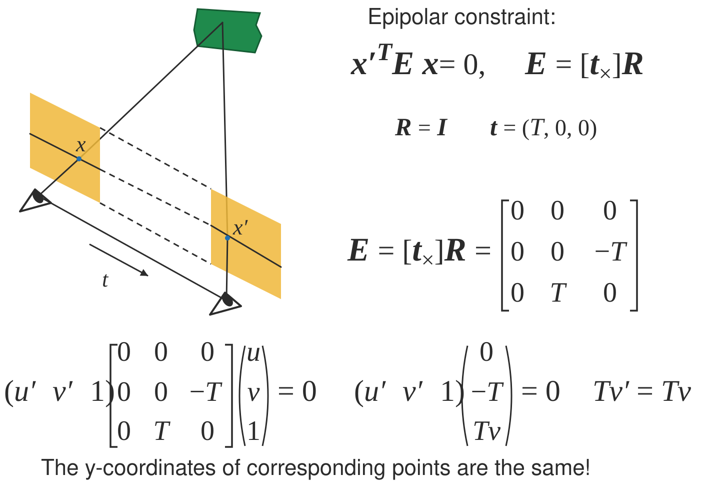
Fig. 75 Figure 11. For two parallel cameras (R = I, t along the x axis) the epipolar constraint x′ᵀEx = 0 reduces to v′ = v: corresponding points sit on the same image row.#
correspondence search algorithms (simplest to most complex)
assume photo consistency - same points in space will give same brightness of pixels
take a window and use metric
larger window smoother, less detail
metrics
minimize L2 norm (SSD)
maximize dot product (NCC - normalized cross correlation) - this works a little better because calibration issues could be different
failures
textureless surfaces
occlusions - have to extrapolate the disparity
half-occlusion - can’t see from one eye
full-occlusion - can’t see from either eye
repetitions
non-lambertian surfacies, specularities - mirror has different brightness from different angles

Optical flow II#
Brightness constancy gives one equation per pixel for two unknowns \((u, v)\), which is the aperture problem. Assuming the flow is the same in a small neighborhood gives enough equations to solve by least squares.
related to stereo disparity except moving one camera over time
aperture problem - looking through certain hole can change perception (ex. see movement in wrong directions)
measure correspondence over time
for point (x, y, t), optical flow is (u,v) = \((\Delta x / \Delta t, \Delta y / \Delta t)\)
optical flow constraint equation: \(I_x u + I_y v + I_t = 0\)
assume everything is Lambertian - brightness of any given point will stay the same
also add brightness constancy assumption - assume brightness of given point remains constant over short period \(I(x_1, y_1, t_1) = I(x_1 + \Delta x, y_1 + \Delta x, t_1 + \Delta t)\)
here, \(I_x = \partial I / \partial x\)
local constancy of optical flow - assume u and v are same for n points in neighborhood of a pixel
rewrite for n points(left matrix is A): \(\begin{bmatrix} I_x^1 & I_y^1\\ I_x^2 & I_y^2\\ \vdots & \vdots \\ I_x^n & I_y^n\\ \end{bmatrix}\begin{bmatrix} u \\ v\end{bmatrix} = - \begin{bmatrix} I_t^1\\ I_t^2\\ \vdots \\ I_t^n\\\end{bmatrix}\)
then solve with least squares \(\begin{bmatrix} u \\ v\end{bmatrix}=-(A^TA^{-1} A^Tb)\)
second moment matrix \(A^TA\) - need this to be high enough rank
General correspondence + interest points#
Rather than search every pixel, find a few distinctive keypoints in each image, describe each by a vector, and match the vectors.
more general correspondence - matching points, patches, edges, or regions across images (not in the same basic image)
most important problem - used in steropsis, optical flow, structure from motion
2 ways of finding correspondences
align and search - not really used
keypoint matching - find keypoint that matches and use everything else
3 steps to kepoint matching: detection, description, matching
Detection - identify key points#
A good keypoint is a corner: shifting a small window in any direction changes it a lot. The Harris detector measures this with the eigenvalues of the second moment matrix \(M\): two large eigenvalues mean a corner, one means an edge.
find ‘corners’ with Harris corner detector
shift small window and look for large intensity change in multiple directions
edge - only changes in one direction
compare auto-correlation of window (L2 norm of pixelwise differences)
very slow naively - instead look at gradient (Taylor series expansion - second moment matrix M)
if gradient isn’t flat, then it’s a corner
look at eigenvalues of M
eigenvalues tell you about magnitude of change in different directions
if same, then circular otherwise elliptical
corner - 2 large eigenvalues, similar values
edge - 1 eigenvalue larger than other
simple way to compute this: \(\det(M) - \alpha \: trace(M)^2\)
apply max filter to get rid of noise
adaptive - want to distribute points across image
invariance properties
ignores affine intensity change (only uses derivs)
ignores translation/rotation
does not ignore scale (can fix this by considering multiple scales and taking max)
Description - extract vector feature for each key point#
Each keypoint gets a vector describing the patch around it. The simple MOPS descriptor samples a downsampled patch at the keypoint’s scale, rotated to the orientation of its gradient.
lots of ways - ex. SIFT, image patches wrt gradient
simpler: MOPS
take point (x, y), scale (s), and orientation from gradients
take downsampled rectangle around this point in proper orientation
invariant to things like shape / lighting changes
Matching - determine correspondence between 2 views#
Some matches will be wrong, and least squares on all of them is ruined by outliers. RANSAC fits the transformation to many small random subsets and keeps the one most matches agree with.
not all key points will match - only match above some threshold
ex. criteria: symmetry - only use if a is b’s nearest neighbor and b is a’s nearest neighbor
better: David Lowe trick - how much better is 1-NN than 2-NN (e.g. threshold on 1-NN / 2-NN)
problem: outliers will destroy fit
RANSAC algorithm (random sample consensus) - vote for best transformation
repeat this lots of times, pick the match that had the most inliers
select n feature pairs at random (n = minimum needed to compute transformation - 4 for homography, 8 for rotation/translation)
compute transformation T (exact for homography, or use 8-point algorithm)
count inliers (how many things agree with this match)
8-point algorithm / homography check
\(x^TEx < \epsilon \) for 8-point algorithm or \(x^THx < \epsilon\) for homography
finally, could recompute least squares H or F on all inliers
Correspondence for sfm / instance retrieval#
Structure from motion solves for the cameras (calibration) and the 3D points (triangulation) together, by minimizing the reprojection error over all images. Incremental systems start from two cameras and add the rest one at a time. Retrieval finds images of the same scene by matching visual words, then checks that the matches agree on one transformation.
sfm (structure for motion) - given many images, simultaneously do 2 things
calibration - find camera parameters
triangulation - find 3d points from 2d points
structure for motion system (ex. photo tourism 2006 paper)
camera calibration: determine camera parameters from known 3d points
parameters
internal parameters - ex. focal length, optical center, aspect ratio
external parameters - where is the camera
only makes sense for multiple cameras
approach 1 - solve for projection matrix (which contains all parameters)
requires knowing the correspondences between image and 3d points (can use calibration object)
least squares to find points from 3x4 projection matrix which projects (X, Y, Z, 1) -> (x, y, 1)
approach 2 - solve for parameters
translation T, rotation R, focal length f, principle point (xc, yc), pixel size (sx, sy)
can’t use homography because there are translations with changing depth
sometimes camera will just list focal length
decompose projection matrix into a matrix dependent on these things
nonlinear optimization
triangulation - predict 3d points \((X_i, Y_i, Z_i)\) given pixels in multiple cameras \((x_i, y_i)\) and camera parameters \(R, t\)
minimize reprojection error (bundle adjustment): \(\sum_i \sum_j \underbrace{w_{ij}}_{\text{indicator var}}\cdot \vert \vert \underbrace{P(x_i, R_j, t_j)}_{\text{pred. im location}} - \underbrace{\begin{bmatrix} u_{i, j}\\v_{i, j}\end{bmatrix}}_{\text{observed m location}}\vert \vert ^2\)
solve for matrix that projects points into 3d coords
incremental sfm: start with 2 cameras
initial pair should have lots of matches, big baseline (shouldn’t just be a homography)
solve with essential matrix
then iteratively add cameras and recompute
good idea: ignore lots of data since data is cheap in computer vision
search for similar images - want to establish correspondence despite lots of changes
see how many keypoint matches we get
search with inverted file index
ex. visual words - cluster the feature descriptors and use these as keys to a dictionary
inverted file indexing
should be sparse
spatial verification - don’t just use visual words, use structure of where the words are
want visual words to give similar transformation - RANSAC with some constraint
Deep learning#
CNNs#
CNNs learn the features that the earlier sections design by hand. Their internal representations carry over to other tasks.
object recognition - visual similarity via labels
classification
linear boundary -> nearest neighbors
neural nets
don’t need feature extraction step
high capacity (like nearest neighbors)
still very fast test time
good at high dimensional noisy inputs (vision + audio)
pooling - kind of robust to exact locations
a lot like blurring / downsampling
everyone now uses maxpooling
history: lenet 1998
neocognitron (fukushima 1980) - unsupervised
convolutional neural nets (lecun et al) - supervised
alexnet 2012
used norm layers (still common?)
resnet 2015
152 layers
3x3s with skip layers
like nonparametric - number of params is close to number of data points
network representations learn a lot
zeiler-fergus - supercategories are learned to be separated, even though only given single class lavels
nearest neighbors in embedding spaces learn things like pose
can be used for transfer learning
fancy architectures - not just a classifier
siamese nets
ex. want to compare two things (ex. surveillance) - check if 2 people are the same (even w/ sunglasses)
ex. connect pictures to amazon pictures
embed things and make loss function distance between real pics and amazon pics + make different things farther up to some margin
ex. searching across categories
multi-modal
ex. could look at repr. between image and caption
semi-supervised
context as supervision - from word predict neighbors
predict neighboring patch from 8 patches in image
multi-task
many tasks / many losses at once - everything will get better at once
differentiable programming - any nets that form a DAG
if there are cycles (RNN), unroll it
fully convolutional
works on different sizes
this lets us have things per pixel, not per image (ex. semantic segmentation, colorization)
usually use skip connections
Image segmentation#
Segmentation labels each pixel with a region. The classical approach combines boundary and region cues into an affinity graph and cuts it; the deep approach uses a fully convolutional net that upsamples back to full resolution.
consistency - 2 segmentations consistent when they can be explained by same segmentation tree
percept tree - describe what’s in an image using a tree
evaluation - how to correspond boundaries?
min-cost assignment on bipartite graph=bigraph - connections only between groundtruth, signal
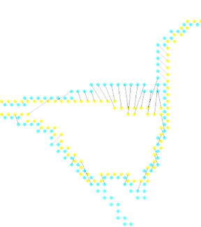
Fig. 76 Figure 12. Evaluating a boundary against the ground truth. The two sets of boundary pixels are drawn in yellow and cyan, and lines connect the pairs matched by a min-cost assignment on the bipartite graph between them.#
ex. for each pixel predict if it’s on a boundary by looking at window around it
proximity cue
boundary cues: brightness gradient, color gradient, texture gradient (gabor responses)
look for sharp change in the property
region cue - patch similarity
proximity
graph partitioning
learn cue combination by fitting linear combination of cues and outputting whether 2 pixels are in same segmentation
graph partitioning approach: generate affinity graph from local cues above (with lots of neighbors)
normalized cuts - partition so within-group similarity is large and between-group similarity is small
deep semantic segmentation - fully convolutional
upsampling
unpooling - can fill all, always put at top-left
max-unpooling - use positions from pooling layer
learnable upsampling = deconvolution = upconvolution = fractionally strided convolution = backward strided convolution - transpose the convolution
Classification + localization#
Detection outputs a box and a class for each object. The R-CNN family makes this fast by sharing computation: first features shared across regions, then the region proposals themselves.
goal: coords (x, y, w, h) for each object + class
simple: sliding window and use classifier each time - computationally expensive!
region proposals - find blobby image regions likely to contain objects and run (fast)
R-CNN - run each region of interest, warped to some size, through CNN
Fast R-CNN - get ROIs from last conv layer, so everything is faster / no warping
to maintain size, fix number of bins instead of filter sizes (then these bins are adaptively sized) - spatial pyramid pooling layer
Faster R-CNN - use region proposal network within network to do region proposals as well
train with 4 losses for all things needed
region proposal network uses multi-scale anchors and predicts relative to convolution
instance segmentation
mask-rcnn - keypoint detection then segmentation
Learning detection#
A feature map keeps the layout of the image: where a feature fires says where something is, and its response says what it is. Detection networks read boxes and contours from these maps at several scales.
countour detection - predict contour after every conv (at different scales) then interpolate up to get one final output (ICCV 2015)
deep supervision helps to aggregate multiscale info
semantic segmentation - sliding window
classification + localization
need to output a bounding box + classify what’s in the box
bounding box: regression problem to output box
use locations of features
feature map
location of a feature in a feature map is where it is in the image (with finer localization info accross channels)
response of a feature - what it is
Modeling figure-ground#
figure is closer, ground background - affects perception
figure/ground datasets
local cues
edge features: shapemes - prototypical local shapes
junction features: line labelling - contour directions with convex/concave images
lots of principles
surroundedness, size, orientation, constrast, symmetry, convexity, parallelism, lower region, meaningfulness, occlusion, cast shadows, shading
global cues
want consistency with CRF
spectral graph segmentation
embedding approach - satisfy pairwise affinities
Single-view 3d construction#
One image does not determine depth, so single-view 3D needs priors about the world: either an explicit model fit to the image (vanishing points, simple shapes) or a model learned from data with 3D labels.
useful for planning, depth, etc.
different levels of output (increasing complexity)
image depth map
scene layout - predict simple shapes of things
volumetric 3d - predict 3d binary voxels for which voxels are occupied
could approximate these with CAD models, deformable shape models
need to use priors of the world
(explicit) single-view modeling - assume a model and fit it
many classes are very difficult to model explicitly
ex. use dominant edges in a few directions to calculate vanishing points and then align things
(implicit) single-view prediction - learn model of world data-driven
collect data + labels (ex. sensors)
train + predict
supervision from annotation can be wrong
Unsupervised keypoint learning#
Unsupervised Learning of Visual 3D Keypoints for Control (chen, abbeel, & pathak, 2021) - learn keypoints unsupervised from video
KeypointDeformer: Unsupervised 3D Keypoint Discovery for Shape Control (jakab…kanazawa, 2021) - learn to predict keypoints completely unsupervised
can also manipulate keypoints and generate new shape
Lions and Tigers and Bears: Capturing Non-Rigid, 3D, Articulated Shape From Images (zuffi, kanazawa, & black, 2018) - capture 3d shape of animals using 2d images alone
Self-Supervised Learning of Interpretable Keypoints From Unlabelled Videos (jakab et al. 2020 cvpr) - recognize pose uses unlabelled videos + weak empirical prior on the object poses
Unsupervised Object Keypoint Learning using Local Spatial Predictability (gopalakrishnan…schmidhuber, 2021) - identifies salient regions by trying to predict local image regions from spatial neighborhoods
applications to Atari
Key ideas
Perspective projection divides by depth, \(x = fX/Z\), which explains vanishing points, foreshortening and why near objects look bigger.
{‘Images are sampled signals’: ‘blur before downsampling to avoid aliasing, and use derivative-of-Gaussian filters to find edges without amplifying noise.’}
Depth from stereo comes from disparity, \(d = bf/Z\) for parallel cameras, so depth error grows like \(Z^2\).
Correspondence (finding the same point in two images) underlies stereo, optical flow and structure from motion, and is built from keypoint detection, description and matching with RANSAC.
Several hand-designed filters have counterparts in the visual system, and CNNs learn such features from data instead of having them designed.